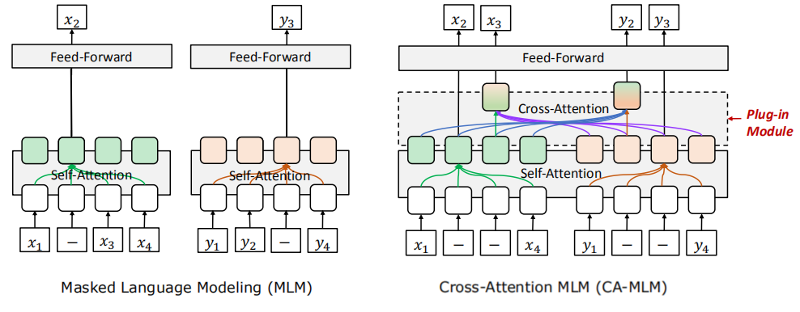

2021
-
nmT5: NMT + Multilingual T5
nmT5 stands for “NMT + Multilingual Text-to-Text Transfer Transformer” which is an attempt to improve the performance of the mT5 model by incorporating parallel data into pre-training. This model was proposed by the same authors from Google Research as the mT5 paper. In 2021, it was published in this paper: nmT5 - Is parallel data still relevant for pre-training massively multilingual language models?. …
-
XLM-E: XLM via ELECTRA
XLM-E stands for “Cross-lingual Language Modeling via Electra” which is a cross-lingual language model that was pre-trained on two ELECTRA-style tasks as we are going to see later. XLM-E was proposed by Microsoft in 2021 and published in their paper: Cross-lingual Language Model Pre-training via ELECTRA. The official code for this paper can be found on Microsoft’s GitHub repository: microsoft/unilm. …
-
∆LM: Delta Language Modeling
DeltaLM (∆LM) is a pre-trained multilingual encoder-decoder model whose encoder and decoder are initialized with a pre-trained multilingual encoder, and trained in a self-supervised way. DeltaLM was proposed by Microsoft in 2021 and published in their paper: “∆LM: Encoder-Decoder Pre-training for Language Generation and Translation by Augmenting Pretrained Multilingual Encoders”. The official code for this paper can be found on Microsoft’s GitHub repository: microsoft/deltalm. …
-

mT6: Multilingual T5 with Translation Pairs
mT6 stands for “Multilingual Text-to-Text Transfer Transformer with Translation pairs” which is an attempt to improve the performance of the mT5 model by incorporating translation objectives into the pre-training part. This model was proposed by Microsoft Research in 2021 and published in this paper: mT6: Multilingual Pretrained Text-to-Text Transformer with Translation Pairs. …
2020
-

VECO: Cross-lingual Pre-training
VECO stands for “Variable and Flexible Cross-lingual Pre-training” which is a pre-training approach for cross-lingual language models that uses “Cross-Attention Masked Language Modeling” (CA-MLM) objective. VECO was proposed by Alibaba Group in 2020 and published in their “VECO: Variable and Flexible Cross-lingual Pre-training for Language Understanding and Generation” paper. The official code for this paper can be found on Alibaba’s official GitHub repository: alibaba/VECO. …
-
mT5: Multilingual T5
mT5 stands for “Multilingual Text-to-Text Transfer Transformer” which is a multilingual variant of T5 trained on 101 languages. mT5 was proposed by Google Research in 2020 and published in their paper: mT5: A Massively Multilingual Pre-trained Text-to-Text Transformer. The official code can be found on Google Research’s official GitHub repository: google-research/multilingual-t5. …
-

AMBER
AMBER stands for “Aligned Multilingual Bidirectional EncodeR” is a cross-lingual language model that adopts the same architecture as BERT; where the contextual embeddings of words/sentences with similar meanings across languages are aligned together in the same space. AMBER was proposed by Google Research in collaboration with Carnegie Mellon University in 2020 and published in their paper: Explicit Alignment Objectives for Multilingual Bidirectional Encoders. The official code for this paper can be found in this GitHub repository: amber. …
-

InfoXLM
InfoXLM stands for “Information-theoretic procedure for Cross-Lingual Modeling” which is a cross-lingual language model proposed by Microsoft in 2020 and published in their paper: InfoXLM: An Information-Theoretic Framework for Cross-Lingual Language Model Pre-Training. The official code for this paper can be found in Microsoft’s official UniLM GitHub repository: unilm/infoxlm. …
-

LaBSE: Language-agnostic Sentence Embeddings
LaBSE stands for “Language-agnostic BERT Sentence Embedding” which is a multilingual model the produces language-agnostic sentence embeddings for 109 languages. LaBSE model was proposed by Google AI in 2020 and published in this paper under the same name: Language-agnostic BERT Sentence Embedding. The official code for this paper can be found in the following TensorFlow Hub link: tfhub/LaBSE. …
-
ALM: Alternating Language Modeling
ALM stands for “Alternating Language Modeling” which is a novel cross-lingual pre-training method proposed by Microsoft in 2021 and published in their paper: Alternating Language Modeling for Cross-Lingual Pre-Training. The official code for this paper can be found in the following repository: ALM. …
2019
-
XLM-R
XLM-R stands for “Cross-lingual Language Modeling-RoBERTa” which was created by FacebookAI in 2019 and published in this paper: “Unsupervised Cross-lingual Representation Learning at Scale”. The goal of paper is to improve the XLM model’s performance on both cross-lingual and monolingual understanding tasks. XLM-R follows the XLM model architecture with a changes that improve the performance at scale. And these changes are: …
-

Unicoder: Universal Encoder
Unicoder is an abbreviation of “Universal Encoder” which is a language encoder that is universal across different number of languages. The Unicoder model was proposed by Microsoft in 2019 and published in this paper: Unicoder: A Universal Language Encoder by Pre-training with Multiple Cross-lingual Tasks. The official code for this paper can be found on Microsoft’s official GitHub repository: microsoft/Unicoder. …
-
XNLG
XNLG stands for “Cross-lingual Natural Language Generation” which is an encoder-decoder cross-lingual model designed for Natural Language Generation (NLG) tasks such as question generation and abstractive summarization. This model was created by Microsoft in 2019 and published in their paper: Cross-Lingual Natural Language Generation via Pre-Training. The official code for this paper is found in the following GitHub repository: xnlg. …
-
XLM
XLM stands for “Cross-lingual Language Modeling” which is a model created by FacebookAI in 2019 and published in this paper: “Cross-lingual Language Model Pretraining”. XLM is an 12-layer encoder-transformer of with 1024 hidden units, 16 heads, and GELU activation. …
2018
-
mBERT: Multilingual BERT
mBERT is a multilingual BERT pre-trained on 104 languages, released by the authors of the original paper on Google Research’s official GitHub repository: google-research/bert on November 2018. mBERT follows the same structure of BERT. The only difference is that mBERT is pre-trained on concatenated Wikipedia data for 104 languages and it does surprisingly well compared to cross-lingual word embeddings on zero-shot cross-lingual transfer in XNLI dataset. …